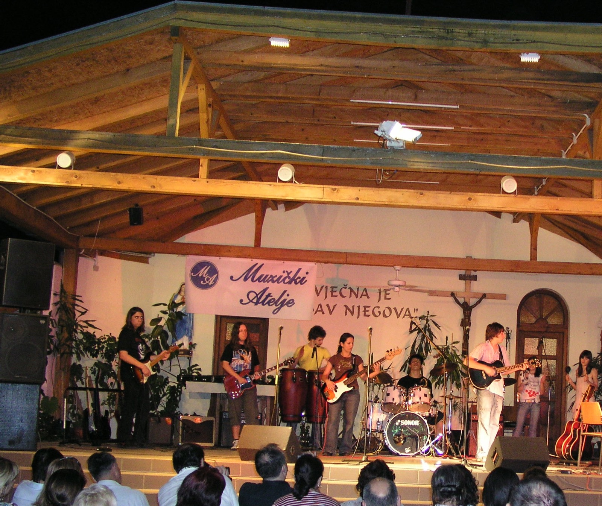
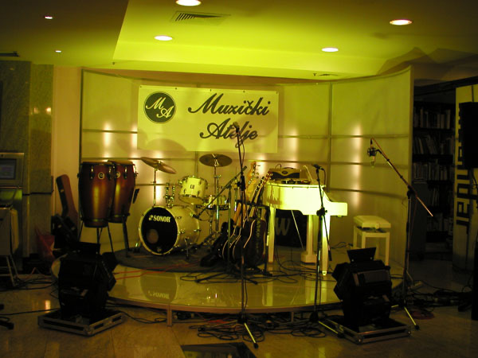
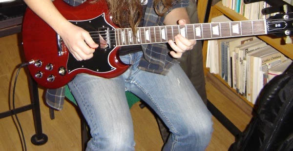
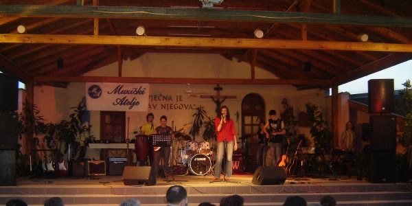
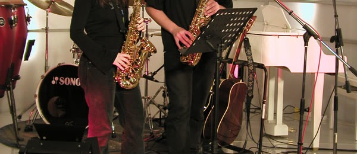
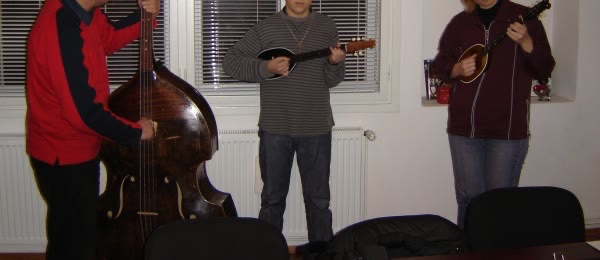

Glazbena igraonica
Kroz igru, pjevanje i sviranje Orffovih udaraljki i metalofona djeca sustavno, na sebi primjeren način, započinju glazbeno obrazovanje.
Više o igraoniciGlazbena škola Muzički Atelje u Zagrebu djeluje od 2000. godine. Individualna nastava za sve instrumente – od glazbene igraonice za najmlađe, preko osnovne i srednje glazbene škole, do izbornog programa za odrasle. U centru grada i na Jarunu.

Individualna nastava temelj je programa Muzičkog Ateljea: nastavnik i učenik rade zajedno, a gradivo se prilagođava dobi, sposobnostima i afinitetima svakog polaznika.
Kroz igru, pjevanje i sviranje Orffovih udaraljki i metalofona djeca sustavno, na sebi primjeren način, započinju glazbeno obrazovanje.
Više o igraoniciGlavni predmet, solfeggio i skupno muziciranje. Polaznici mlađi od 9 godina kreću od uvodnog stupnja prilagođenog njihovoj dobi.
Satnica i predmetiKlasični i jazz odjel, glavni predmet od 60 minuta i solistički koncert na kraju školovanja.
Više o srednjoj školi18 sati individualne nastave po 30, 45 ili 60 minuta – instrument po izboru, bez obveznog školskog programa. Zimi i kraći tečaj od 8 sati.
Cijene za odrasleMuzički Atelje vodi dva usporedna programa. Pri upisu zajedno odabiremo onaj koji odgovara vašim ciljevima.
Osnovna i srednja glazbena škola za klasičnu glazbu, s radom od 18. 12. 2012. Izdaje svjedodžbe verificirane od Ministarstva znanosti i obrazovanja.
Program Muzičkog Ateljea d.o.o. za glazbenu poduku: rock, pop, jazz, klasika i tamburaška glazba, po stupnjevima (semestrima) od 18 radnih tjedana.
Javni satovi, koncerti, smotre i natjecanja sastavni su dio nastave.






Klavir, violina, violončelo, gitara, puhači – A i B program.
Gitara, bas, bubnjevi, udaraljke, pjevanje, saksofon, truba.
Domaća tradicijska i klasična literatura, sviranje u orkestru.
Individualna nastava i praktični rad na koncertu i u studiju.
U dvorani škole na Jarunu 22 Muzički Atelje organizira seminare s gostujućim pedagozima, otvorene za aktivne i pasivne polaznike.
Seminari klavira u suradnji koja traje već četrnaest godina.
Pridružuje se seminarima klavira – suradnja na šest seminara.
Seminar violine, nastavljen 2026. nakon vrlo pozitivnih reakcija pedagoga i sudionika.
Novo: tečaj Glazba i biznis u suradnji s agencijom Art Events – vikend seminar, jednosemestralni i dvosemestralni tečaj za glazbenike koji žele graditi profesionalnu karijeru.
Niste pronašli odgovor? Nazovite 095 910 2412 ili pišite na info@muzickiatelje.hr.
Pošaljite upit ili nazovite – naknadni upisi su po dogovoru. Termine nastave dogovaramo prilikom upisa.